I keep returning to these three questions because they seem connected: how does a woman make space for herself?
1. How do private rituals shape a women’s sense of herself2.How do women consturct private spaces.
3.How do changing social expectations shape East Asian women’s identities and choices throughout their lives?
That space could be a room, but it might just be a few minutes alone before bed. I want to start with moments like this. I’m still not sure whether doing something in private makes it your own.
A habit like skincare can feel comforting, while also being shaped by expectations about how women should look. I want to understand what it feels like to the person doing it before deciding what it means.
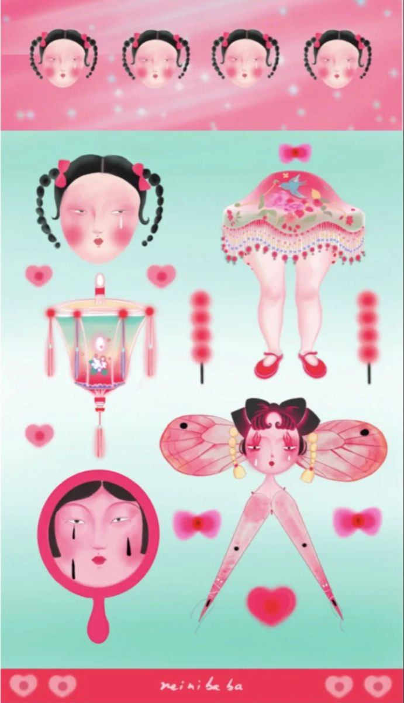
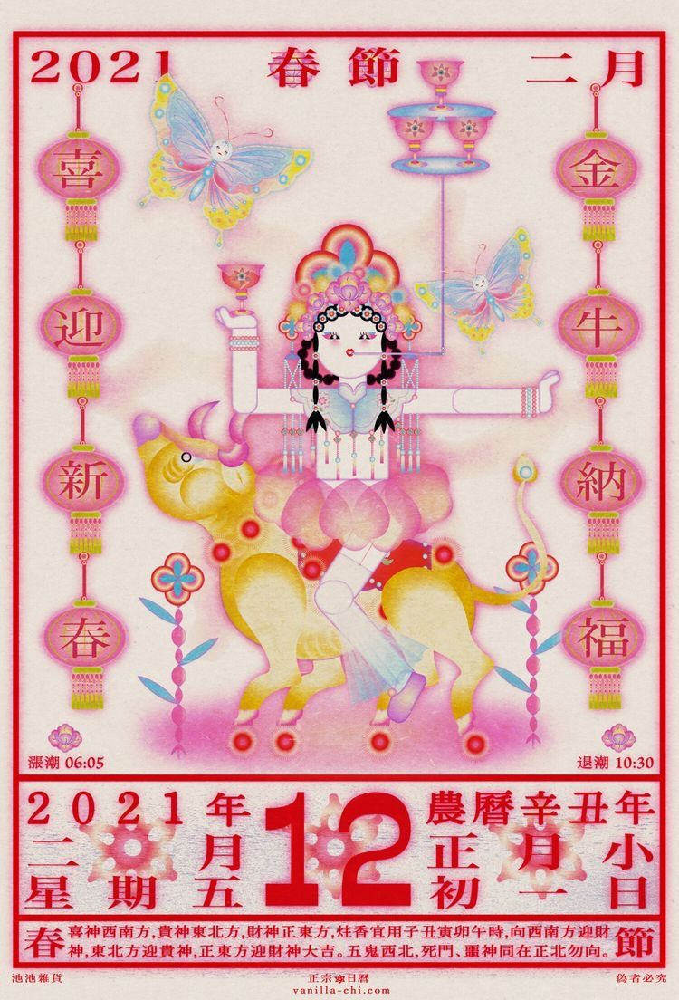
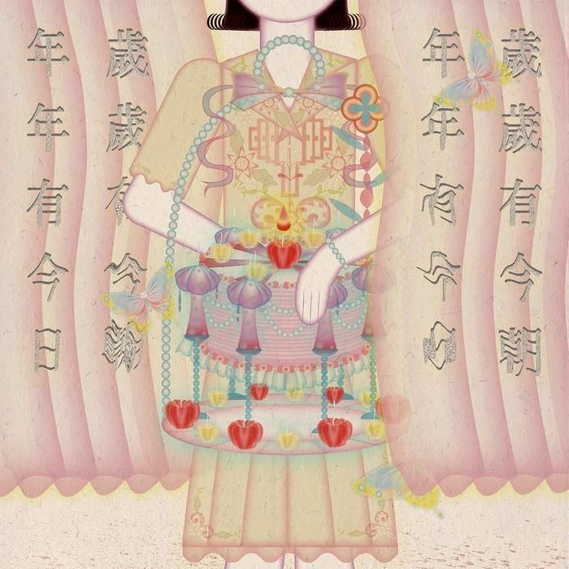
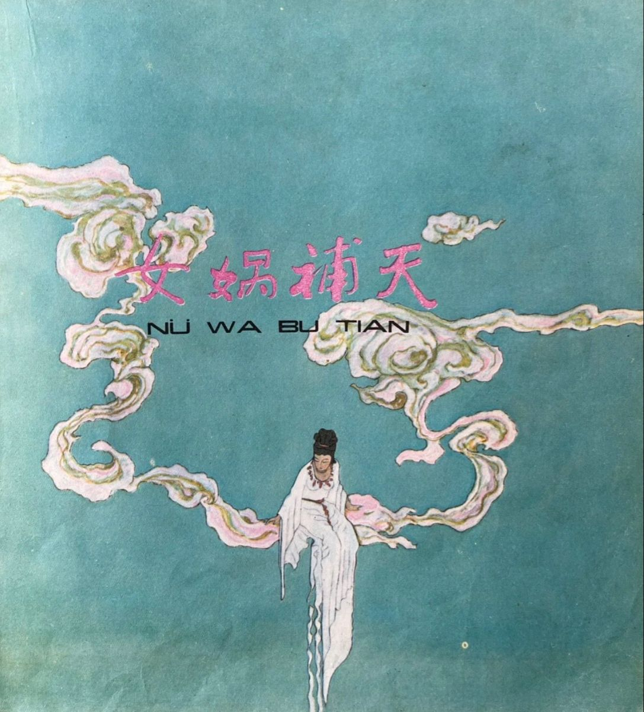
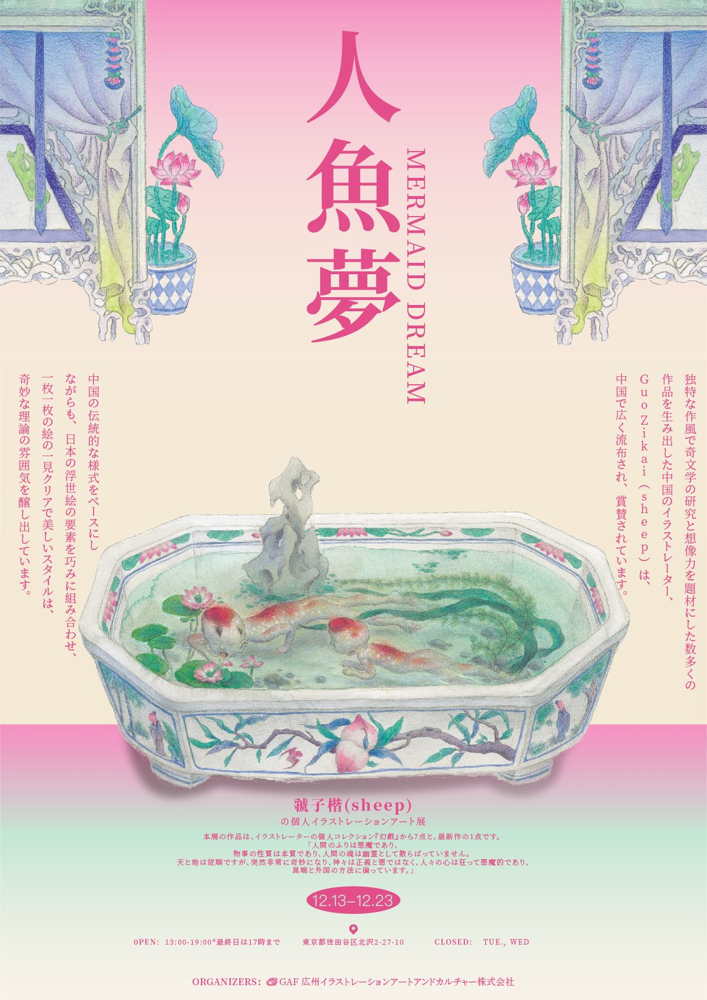
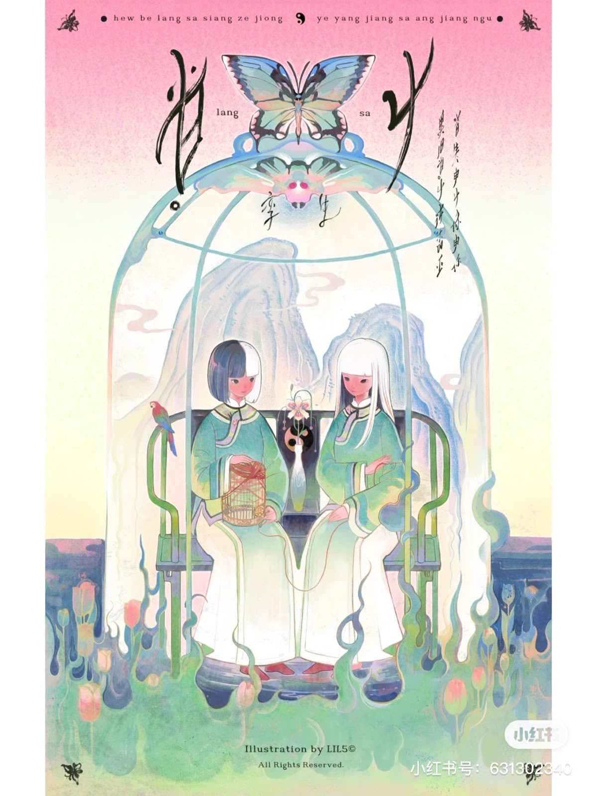
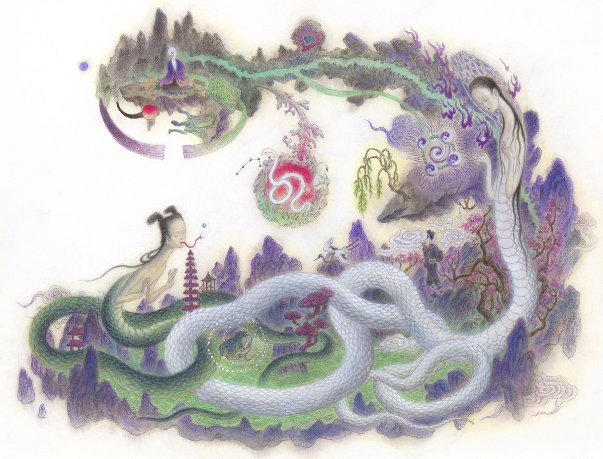
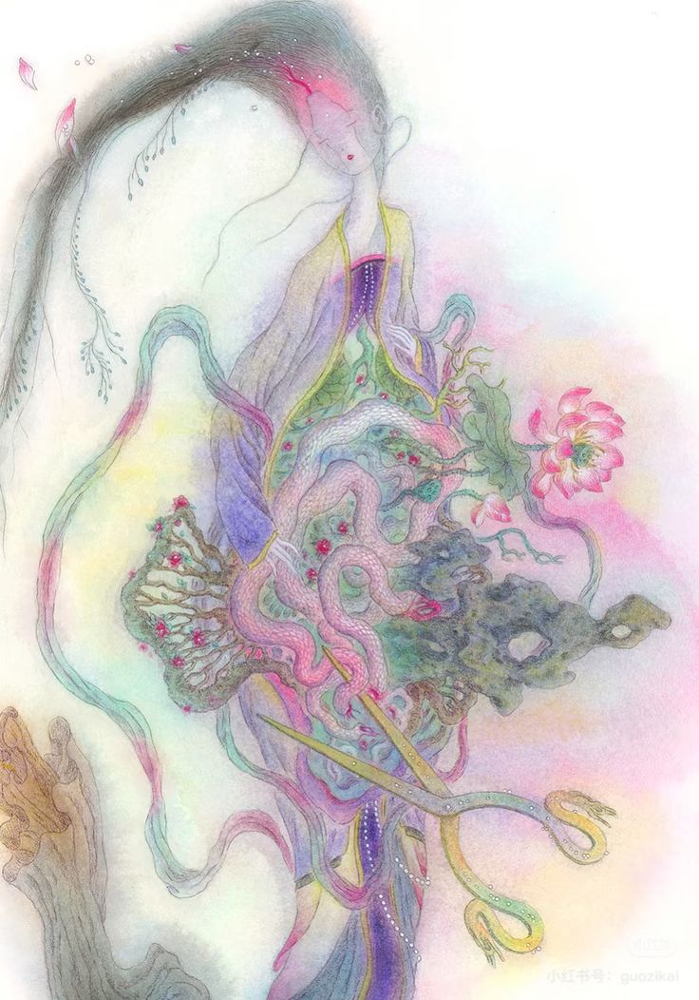
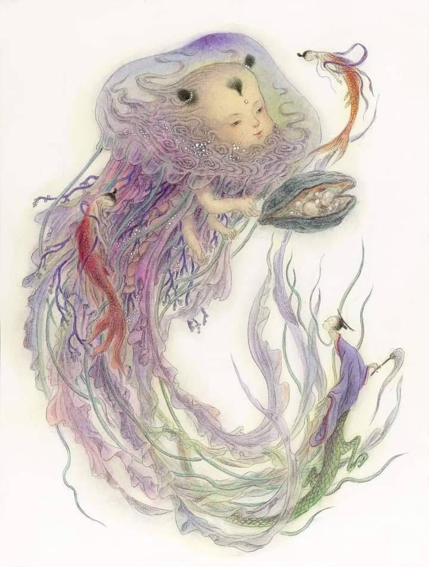
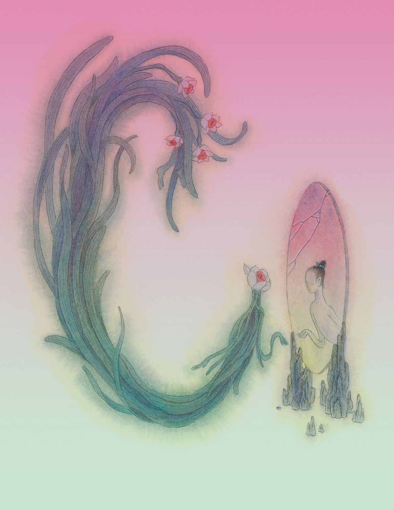
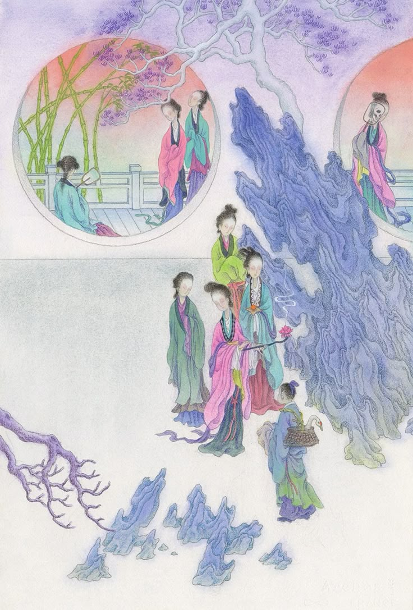
How do private rituals shape a woman’s sense of self?
I want to understand why a small routine matters to the person doing it. I’m still working out what makes it a ritual.
R01 Waste Not
Song Dong made Waste Not with his mother, Zhao Xiangyuan, using things she had saved at home. MoMA links her habit to past hardship.
I’m interested in why something that seems useless to one person can be hard for someone else to throw away.
R02 Manifesto for Maintenance Art
In her 1969 manifesto, Ukeles treated everyday housework as art.
This makes me question whether a repeated task feels like a ritual to the person doing it.
How do women construct private worlds?
I first thought of a private world as a room. Now I’m interested in what a woman chooses to keep to herself.
R05 Dress Box
Yin Xiuzhen sewed shut clothes she had worn over thirty years and sealed them with cement in a suitcase made by her father.
The clothes are still there, even though visitors cannot see them. It makes me wonder whether a private memory needs to be shown at all.
R06 A Room of Memory
Shiota built this installation from old wooden windows.
I wonder how private it feels to be inside a room made of windows.
How do changing social expectations shape East Asian women’s identities and choices throughout their lives?
I want to look at how expectations change as women get older. I need to narrow this down before I begin.
R09 Choosing not to marry
Hong Fincher writes about women in China who feel pressured to marry. I’m interested in what makes staying single feel right for them.
R10 Life after divorce
Alexy looks at divorce in Japan in the early 2000s. I want to understand what independence means after a marriage ends.
R11 Kim Jiyoung, Born 1982
This novel follows a South Korean woman whose choices are shaped by expectations about women. It makes me think about how that pressure builds over time.
R12 Working mothers in Taiwan
Wu’s chapter abstract compares working mothers from two generations in Taiwan. I’m interested in whether having paid work changed what was expected of them at home.